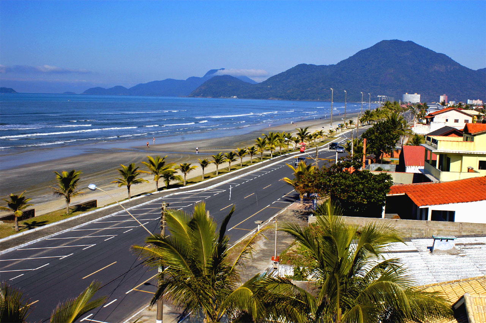

Minhas viajens



-Peruíbe é como se fosse minha segunda casa, vou quase todo mês, amo praia, então coloquei aqui por ser o principal lugar que lembro quando se fala em viajar.
-Foz do Iguaçu foi um dos lugares mais bonitos que já conheci, as cataratas são lindas, pretendo voltar novamente.
-São José dos campos foi um lugar muito lindo que conheci também, um dos motivos de ser muito especial para mim é por eu ter ido viajar com toda a minha família.